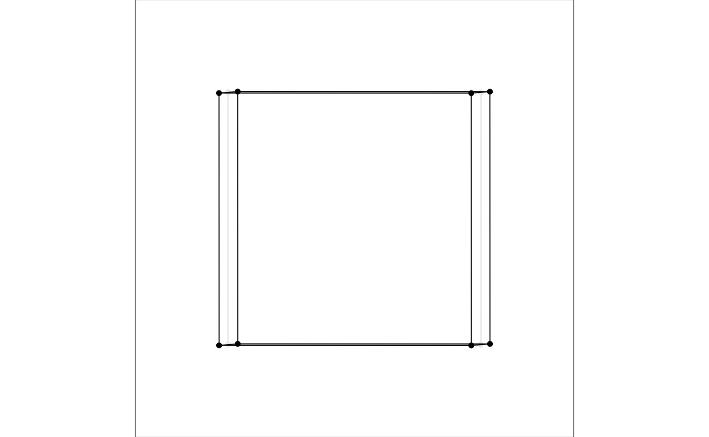
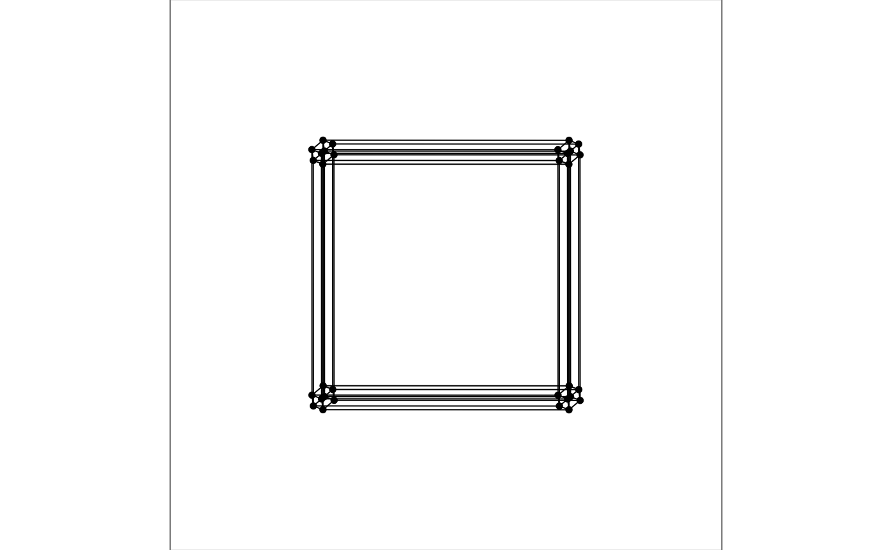
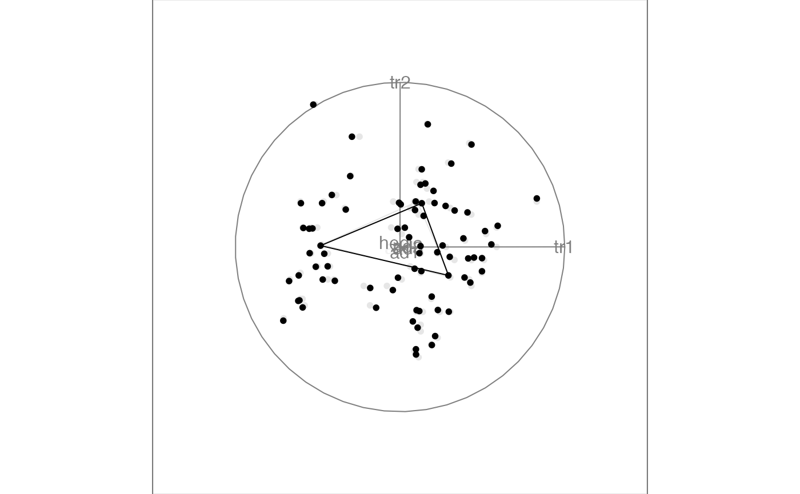

Showing connections between points can be useful in different applications, including geometric shapes, indicating patterns in sequential series or showing connections suggested by a model (for example in clustering). These edges can be added in the 2D scatterplot display (display_xy) through the edges argument, and should be specified as a two column integer matrix of the indices of ends of lines.
For example, we can generate cube vertices and edges using the geozoo package. The information stored as points constitutes the input data, and edges can directly be passed into the display.
# generate 3D cube vertices
cube <- geozoo::cube.iterate(3)
# data is stored points, edges contains the needed two column matrix for connecting points
cube$points
#> Var1 Var2 Var3
#> [1,] 0 0 0
#> [2,] 1 0 0
#> [3,] 0 1 0
#> [4,] 1 1 0
#> [5,] 0 0 1
#> [6,] 1 0 1
#> [7,] 0 1 1
#> [8,] 1 1 1
cube$edges
#> from to
#> 1 1 2
#> 2 1 3
#> 3 1 5
#> 4 2 4
#> 5 2 6
#> 6 3 4
#> 7 3 7
#> 8 4 8
#> 9 5 6
#> 10 5 7
#> 11 6 8
#> 12 7 8
# call grand tour with the scatterplot (xy) display, turning off axes
animate_xy(cube$points, edges = cube$edges, axes = "off")
#> Using half_range 0.87
We can use the same functions for higher dimensional cubes as well (but would not print the data).
cube5 <- geozoo::cube.iterate(5)
animate_xy(cube5$points, edges = cube5$edges, axes = "off")
#> Using half_range 1.1
It can often be useful to connect points with edges, for example sequential points in a time series, or points that are connected by a model. As a simple example we can connect centroids found when clustering the flea dataset:
# get centroids of 3 clusters of the flea data
n <- nrow(flea)
flea_centroids <- stats::kmeans((flea[,-7]), 3)$centers
flea_aug <- rbind(flea[,-7], flea_centroids)
flea_edges <- matrix(c(n+1, n+2, n+1, n+3, n+2, n+3), ncol=2, byrow = TRUE)
animate_xy(flea_aug, edges = flea_edges)
#> Converting input data to the required matrix format.
#> Using half_range 0.98